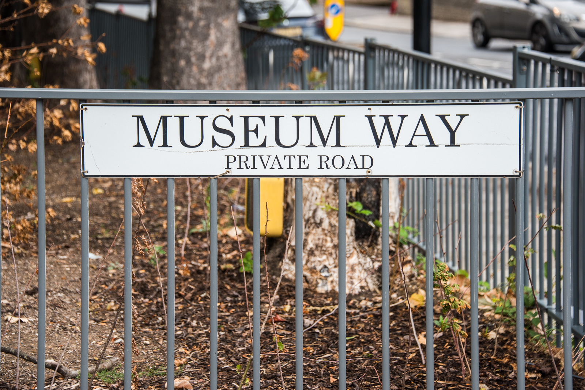

A House That Was Emptied
Gunnersbury is one of those London houses whose best rooms are the ones the family never meant anyone to see. Upstairs, the Rothschild reception rooms have the ceilings and the columns. Downstairs, the Victorian kitchens have what the visiting guide kept returning to: the machinery, the hierarchy and the daily labour that made a Rothschild dinner possible.
The house itself had a long run-up. A mansion has stood on the site since the 17th century; Princess Amelia, daughter of George II, used an earlier house here as a summer retreat; the present Large Mansion was built by Alexander Copland in the early 1800s. Nathan Mayer Rothschild bought it in 1835 and died the following year, without ever living in it. His son Lionel and then his grandson Leopold made it a family retreat, and Leopold reunited the estate by buying the neighbouring Small Mansion in 1889.
The guide opened with a point that explains almost everything about how these rooms look today. When a family moves out, they take their pots and pans with them. The Rothschilds removed their pictures, furniture and furnishings when they sold, and what stayed behind was whatever was too firmly attached to the building: the range, the sinks, the fittings fixed to the walls.
Over the decades that followed, the guide said, much of the early museum’s kitchen material was sold on to antique shops and markets, so the pans and utensils on display now have been gathered back from elsewhere. The cold cupboard, for instance, comes from another Rothschild house at Tring. The kitchens are a working kitchen re-furnished around the few things that never left.
The setting for the rest of this walk is a kitchen complex of several rooms: the main Kitchen, a Scullery, a Butchery, a Pastry Room and a chefs’ office. The museum’s display cards are a useful companion to the guide’s commentary. They give each room’s purpose in plain terms, and each room also carries a first-person “story” card for a servant, written in the imagined voice of a real person from the census. Those voices are interpretation, not quotation, and they are treated that way here.
A Range That Ran
Eighteen Hours a Day
The Kitchen was, in the museum’s words, a constant hive of activity: day-to-day meals and elaborate feasts for the owners and their guests. The Rothschilds modernised it soon after buying the house, most visibly with a cast-iron roasting range that roasted meat and heated water, essential equipment in a large house of the 18th and 19th centuries. A state-of-the-art pastry oven was fitted beside it.
The guide pointed first to the mechanism at the top of the range, a contraption that automated the spit. In essence, as explained on the tour, there is a fire in the hearth; the heat and force of the rising air turn a fan in the flue, and that fan is linked by a chain and gears to the spit, so the meat revolves without anyone cranking it. The chain, the guide added, used to be longer. This is the smoke jack, and it does not need a kitchen boy to turn the roast.
“There’s more physics to it, probably, but I don’t know.” — Guide, with admirable honesty
The same range heated a boiler behind the fire, which fed the house its hot water and a hot cupboard that kept dishes warm for the footmen to carry upstairs. The guide stressed what that meant for the household: nobody had to boil pot after pot of water. By the standards of the day, a hot-water supply running off the range was a luxury.
The luxury had limits. In the imagined voice of Elizabeth Kilby, the lower kitchen maid, the museum has her complain that the maids were not allowed hot water from the range at all, and scrubbed the kitchen with cold water and carbolic soap until their hands cracked.
On the guide’s reckoning, the kitchen fed the family plus roughly nineteen servants at the time of the census, with outdoor staff on top (numbers uncertain) and, on party nights, extra mouths and extra courses. My notes on the figure are patchy, so treat it as provisional. “It was a busy kitchen,” the guide said, which on this evidence is an understatement.
The display cards also show the kitchen was not static. A bill from July 1878 to Baron Lionel de Rothschild from Jones Brothers of Ealing, general furnishing ironmongers and gas fitters, lists rat traps, edging shears, copper wire and the repair of water cans. The same card’s caption says the firm also supplied the kitchen’s gas range, a more controllable source of heat for stocks, sauces and glazes. The Scullery’s display describes a Leamington “kitchener”, a closed range with separate ovens, hotplates and hidden flues, which made cooking cleaner.
The Cold Cupboard &
the Ice House
Refrigeration in a Victorian country house meant ice, and ice meant planning. The cold cupboard in the Rothschild kitchens, which the museum says dates from around 1900, has a large compartment at the top for blocks of ice and drawers below for chilling jellies, keeping milk and cream cool, and setting desserts. The museum calls it a sophisticated refrigeration device. Before electricity, it notes, even insulated ice-chests lined with zinc or slate were luxuries found only in hotels, food shops and large mansions.
Where did the ice come from? The guide’s answer had two seasons. In winter, ice came off the park’s own ponds and lakes and went into an underground ice house in the grounds. The museum’s cards confirm that snow and ice collected from the ponds were stored there. In summer, the guide said, supplies were imported, from Norway and Canada among other places. The museum’s cards give a looser version of the same story: ice might also be delivered from London as it became more readily available, first imported and later manufactured.
Gunnersbury does have an ice house, the guide said, and it is not open to the public. The guide was not sure exactly where it is, only that someone had said it was near the Orangery. That second-hand location should be read as hearsay rather than as a fact; the museum’s own cards say only that it was “in the Park”.
What the cards do add is a trace of the kitchen’s sweeter side: a 1917 house inventory lists pewter ice-cream freezers and fancy metal moulds for making ices.
A Room Built for Meat —
and Perhaps for Kosher
Few Victorian houses had a dedicated butchery, and this one was unusual even for its time. The museum says the Rothschilds built it around 1900 for storing and preparing meat, much of it reared on the estate farm and eaten here and at their London residence. The clues to its original use are in the details. The large modern window was once an open grille, letting fresh air in to keep the meat cool. The ceiling supports in front of it held metal bars from which carcasses, plucked game birds and haunches of venison once hung.
Why have a butchery at all? The museum offers two possible reasons, both of them inferences rather than facts: to enable kosher preparation of meat, or to process carcasses from the estate farm. It also notes the many sinks and pans in the kitchens, which may have been used to keep meat and dairy apart, as kosher law requires, although they were no doubt needed for the Rothschilds’ many banquets anyway.
The guide made the same point more bluntly: the Rothschilds were a Jewish family, but they did not eat a kosher diet. The museum’s evidence supports that. Letters and menus suggest they ate non-kosher foods such as lobster and venison, and drank wine from non-Jewish winemakers. The museum reads this as part of the family’s strategy of integrating into British society: they entertained a wide range of people, rabbis and cardinals among them.
The practical conclusion: the building may have been able to run a kosher kitchen when a guest required it, without being run as one every day.
Cold Marble and
the Pièce de Résistance
This was the pleasantly cool room, and the cooling was deliberate. Savoury and sweet pastries, desserts and elaborate confectionery were prepared here, with pastry rolled on a marble slab, and the tiled walls and floor kept the temperature low. The guide added the cook’s practical reason for the marble: dough does not stick to it. Pastry belongs far from the range.
The museum’s display shows a page from The Book of Moulds, published by Marshall’s School of Cookery: tin ice-moulds with Gothic spires, fluted towers and crown shapes, a few shillings each, used to produce the elaborate desserts that closed a Victorian banquet. The kitchen maid ground sugar and spices for the chef’s sweet treats with a pestle and mortar.
The pastry chef was Althone Carpenter, born in France and aged 22 at the 1881 census, earning £130 a year. In the museum’s imagined first-person voice, he came to England with his older brother Charles, and was astonished that the Rothschilds employed two French chefs.
His specialities, as the card imagines them: the Pavillon Rustique en Pastillage and the Croquembouche d’Amandes et de Pistaches. He insists on dry, exactly sifted flour, the freshest butter and sweet-smelling suet, and on pastry boards and rolling pins used for nothing else. A cold cupboard to set jellies, and ice from the park to fill it, completed the pastry chef’s kit.
His elder brother, Charles Carpenter, was head chef: 24 at the 1881 census, born in France, earning £150 a year. His card imagines him planning the luncheon and dinner menus every day in his office, sending them up with the footman at eleven, and resenting the mistress when she interfered.
Dinner at eight meant five or six courses, served à la Russe: soup first, then fish such as Timbale de Soles Marquise, then entrées, meat and game, then entremets of Madeira wine jelly and Neapolitan cakes, and finally a dessert of ices, fruit and nuts. The hothouses in the park supplied grapes, peaches, figs, pineapples and strawberries, and at dinner parties, the card says, an orchid was set in front of each lady.
The Room Built to
Keep a French Chef
The guide described this room as a later addition to the kitchens, and gave its purpose in one phrase: it was an inducement to stay. The explanation ran like this. From the early 1900s, hotels and restaurants were becoming fashionable and growing fast, and they looked to French-trained chefs to run their kitchens. A great house had to compete. The Rothschilds paid their chefs the highest wages in the kitchen and, in the guide’s account, gave them their own office as well, to stop them being tempted away.
The museum’s cards back up the underlying point: skilled French cooks like the Carpenter brothers were in high demand, were paid handsomely and were treated well, and records from 1866 show that one French chef was even allowed three weeks’ holiday. A visitor’s write-up of the museum’s 2018 reopening gives the same explanation of the office, which suggests it is part of the museum’s regular telling.
The guide also made a point about gender. Female chefs existed, but they were called cooks, and they were typically found in middle-class households. The great houses employed men, and the men were French.
Susan Thurlow, 24 and from Suffolk, is imagined as the head kitchen maid, up since half past five, puréeing vegetables for the chef’s garnishes and caught between the head chef and the housekeeper, who are at loggerheads over how many ingredients the kitchen gets through. Caroline Weller, 38 and from Kent, is the housekeeper who ordered supplies, kept the household accounts and policed the maids’ conduct. On no account were male “followers” to visit the girls.
Elizabeth Kilby, 21, from Oxford, lit the fires, scrubbed the ranges and, according to her card, was not to speak to the footmen. She spoke to them all the same.
A Wedding, a Motto
and a Road
Upstairs the guide’s commentary moved from the machinery of the house to its occasions. One room was described as something like a living room, which once held a piano. It was also, the guide said, the room where a Rothschild wedding ceremony took place, with the wedding feast then served from the kitchens below.
I didn’t catch the bride’s name clearly (it sounded like “Lenora”). The grand family wedding I can match to Gunnersbury is that of Leonora de Rothschild, eldest daughter of Lionel, to her cousin Alphonse de Rothschild of Paris, on 4 March 1857. The Rothschild Archive calls it one of the most splendid functions ever held at the house, and the Illustrated London News of 14 March 1857 printed an engraving of the bridegroom breaking the wine cup, in the Jewish wedding tradition.
That identification is mine, not the guide’s: the sources confirm the wedding was at Gunnersbury, but not which room held the ceremony.
The guide also described the house’s fall from a peaceful summer home to something much busier: a big new road nearby, and a countryside retreat that no longer felt like one, as part of the reason the family’s time here ended. The Great West Road was built just south of the estate, drawing modern industry to its “Golden Mile”. The dates fit the picture. Leopold de Rothschild died in 1917, and his son Evelyn, the expected heir, was killed in Palestine the same year. In 1925 Leopold’s widow and surviving son sold the estate.
Pointing to the family’s heraldry, the guide gave the Latin motto (I caught only part of it), Concordia, Integritas, Industria (harmony, integrity, industry), and explained the clenched fist holding arrows. The arrows stand for the five sons of Mayer Amschel Rothschild, who founded the family’s five banking houses in Frankfurt, London, Paris, Vienna and Naples; the Rothschild Archive says the family chose the motto in the early 19th century. All of that holds up.
The guide then mentioned two pigeons shown lower down on either side, and linked them to the family’s carrier-pigeon service and its habit of knowing the news first. This one needs care. The Rothschild Archive confirms that the family relied on trusted couriers and did use messenger pigeons for business in the 1820s–40s. But the famous story that pigeons brought Nathan news of Waterloo in 1815 is not authenticated: the Archive says there is no evidence for it, and a historian writing in its Review calls it pure fantasy. The pigeons were real; the Waterloo legend is not.